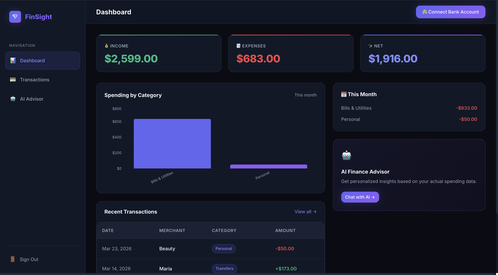
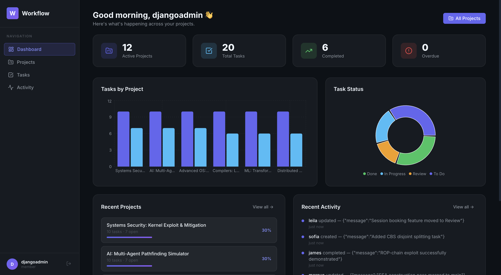
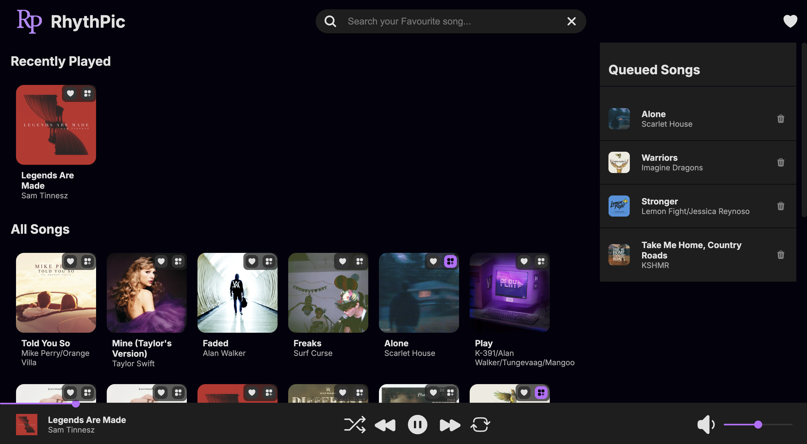
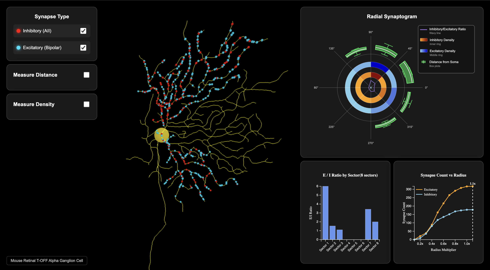

Hello, I'm
Heni Prajapati
Full Stack Developer
Master's student in Computer Science at UIC with expertise in building scalable full-stack applications. Passionate about creating elegant solutions to complex problems using modern technologies.


Hello, I'm
Full Stack Developer
Master's student in Computer Science at UIC with expertise in building scalable full-stack applications. Passionate about creating elegant solutions to complex problems using modern technologies.
Get To Know More
Hi, I am a passionate software engineer and current Master's student in Computer Science at the University of Illinois at Chicago. I enjoy designing and building full-stack applications that combine technical strength with great user experience. My background spans front-end and back-end development, cloud systems, databases, and machine learning, and I've delivered projects from concept to launch in both academic and professional settings. I'm driven by curiosity, collaboration, and the challenge of turning real-world problems into elegant, scalable solutions.
📍 Location: Chicago, IL, USA | Status: Open to Full-Time Opportunities (May 2026)
1+ year
Software Development
MSCS @ University of Illinois at Chicago (Aug 2024 - May 2026)
B.Tech CSE @ IIIT Dharwad (Aug 2019 - May 2023)
My Professional Journey
Jan 2026 - Present | Chicago, USA
June 2023 - May 2024
Explore
Proficient in multiple programming paradigms with strong foundation in both compiled and interpreted languages. Experienced in writing clean, efficient, and maintainable code across different domains.
Expertise in building responsive, interactive user interfaces with modern frameworks and libraries. Proficient in component-based architecture, state management, and creating exceptional user experiences across web platforms.
Strong foundation in server-side development with expertise in building scalable APIs and microservices. Experienced in implementing authentication, database integration, and optimizing application performance.
Comprehensive knowledge of relational and NoSQL databases with expertise in data modeling, query optimization, and database design. Experienced in implementing efficient data storage solutions and managing complex datasets.
Proficient in cloud infrastructure and DevOps practices for scalable application deployment. Experienced in containerization, version control, and implementing CI/CD pipelines for efficient development workflows.
Strong background in data analysis, machine learning, and creating compelling data visualizations. Experienced in processing large datasets, building predictive models, and communicating insights through interactive visualizations.
Expertise in integrating third-party APIs and specialized libraries for enhanced functionality. Experienced in working with financial APIs, AI services, and database abstraction layers to build feature-rich applications.
Browse My Recent

Built full-stack AI finance advisor with Plaid bank integration, async FastAPI backend (SQLAlchemy 2.0), and React frontend; secured financial data with AES-256 encryption and JWT authentication. Implemented Groq API function calling to answer natural language queries over real transaction data with streaming responses; added anomaly detection to flag unusual spending patterns.

Built a comprehensive web application to streamline workflow and task management with secure authentication, role-based access control, and interactive performance dashboards. The system features automated task assignment, real-time progress tracking, and comprehensive analytics to optimize team productivity and project delivery timelines.

An innovative music discovery platform featuring collaborative playlists, time-travel music exploration, and AI-powered lyric visualization. The application integrates Spotify API for seamless music streaming and uses machine learning to create personalized listening experiences, reducing bounce rate by 15% in the first month.

Built a browser-based data processing and visualization pipeline to analyze thousands of synaptic records, enabling real-time exploration of complex 3D neural datasets with spatial analytics. The interactive platform combines Three.js and WebGL technologies to create immersive visualizations of neural connectivity patterns and synaptic relationships.
Developed a comprehensive data analytics platform to analyze and visualize energy performance across 6,500+ Chicago buildings, combining machine learning models with geospatial visualization. The system processes large-scale energy consumption data to identify efficiency patterns and provides actionable insights for urban sustainability initiatives.
Published research demonstrating how data-driven emotional modeling can augment personalized trauma-recovery interventions through advanced NLP and audio signal processing techniques. The study explores innovative approaches to mental health treatment by analyzing emotional patterns and developing predictive models for therapeutic outcomes.
A comprehensive full-stack MERN web application designed to streamline campus services for 900+ students, reducing request resolution time by 40% and improving overall campus accessibility. The platform features real-time service requests, automated workflow management, and comprehensive analytics to enhance student-staff communication and service delivery.
My Achievements
IIIT Dharwad
Secured funding for Camp+ project through competitive proposal process
2023
University of Illinois at Chicago
Pursuing advanced studies in Software Engineering and Machine Learning
2024 - 2026
FIS Global
Professional experience in enterprise-level application development
2023 - 2024
Get in Touch
Or email me directly at: heni290102@gmail.com